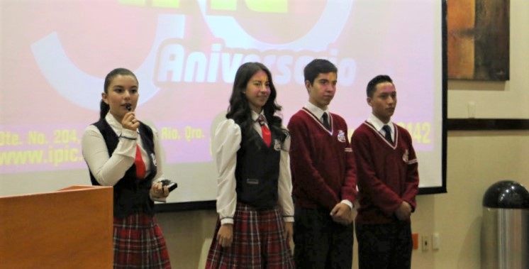
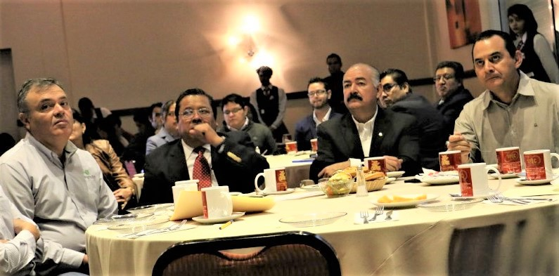

Familiarizacion
Se familiaricen con lo que realizará como Técnico Profesional en la especialidad que hayan cursado o como futuros egresados en alguna licenciatura.
Incentivo Economico
Que los incentivos económicos que recibe por el Servicio Social o Prácticas Profesionales, sean de inversión en sus estudios.
Practicas Profesionales
Ampliar el campo de las practicas profesionales para conocer la estructura de una empresa
Bolsa de Trabajo
Obtengan la experiencia laboral que requieren las empresas en una contratación.
Servicio Social
Ampliar el campo del servicio social
Todo esto se convierte en un beneficio amplio para nuestros egresados, los conocimientos adquiridos en el servicio social y prácticas profesionales, les permite crecer en conocimientos y continuar su siguiente meta con mayor seguridad y mejores oportunidades.

